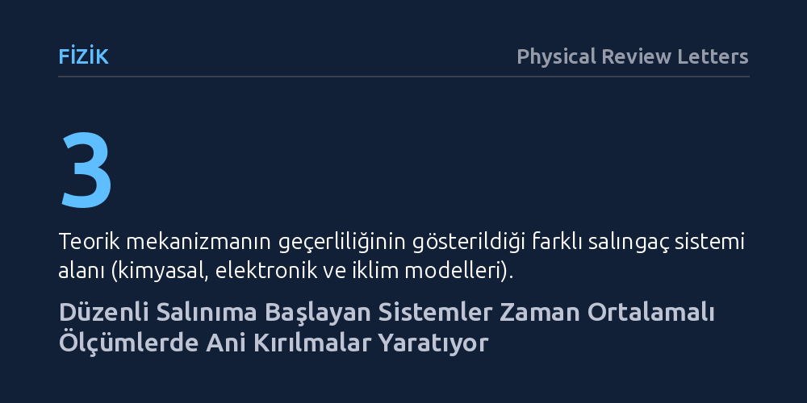

FIZIK · Physical Review Letters · 2026-10-21
Araştırmacılar, dışarıdan beslenen sistemlerin durağan durumdan periyodik salınıma geçtiği Hopf çatallanmalarında zaman ortalamalı ölçümlerin nasıl davrandığını inceledi. Durağan durumda hiçbir patlama olmasa bile, salınımın başlamasıyla birlikte fiziksel büyüklüklerin türevlerinde kırılma noktaları ve analitik olmayan tekillikler ortaya çıktığı gösterildi.
Fiziksel ölçümlerdeki ani kırılma ve süreksizliklerin yalnızca devasa termodinamik sistemlere özgü olmadığını, düzenli salınıma geçen tekil sistemlerin geometrisinden de kaçınılmaz biçimde doğduğunu kanıtlar.

Doğada ve mühendislikte birçok sistem durağan bir dengeden çıkıp kendi kendine düzenli salınmaya başlar. Kalp atışlarından kimyasal saatlere, elektronik sinyal üreteçlerinden gezegen ölçeğindeki iklim döngülerine kadar sayısız süreç bu şekilde işler. Dinamik sistemler teorisinde "süperkritik Hopf çatallanması" adı verilen bu geçiş, sistemin belirli bir eşik değeri aştığında kararlı bir noktadan periyodik bir yörüngeye, yani limit döngüye yumuşakça evrilmesini tanımlar.
Geleneksel fiziksel sezgimiz, eğer bir sistemin durağan durumunda herhangi bir patlama, sonsuza gitme ya da ani sıçrama yoksa, o sistemden ölçtüğümüz büyüklüklerin de pürüzsüz biçimde değişmesi gerektiğini söyler. Örneğin sıcaklık, kimyasal derişim veya voltaj gibi değişkenlerin uzun süreli zaman ortalamasının, sisteme verilen enerji arttıkça yumuşak bir eğri izlemesi beklenirdi. Ancak yanıtlanmamış temel bir soru vardı: Dışarıdan sürülen bir sistem periyodik salınmaya başladığında, ölçülebilen ortalama değerlerde gizli bir kırılma noktası oluşabilir mi?
Araştırmacılar bu soruyu çözmek için karmaşık simülasyonlara başvurmak yerine, işin temel geometrisine ve matematiksel yapısına odaklandı. Bir sistem Hopf çatallanması eşiğini aştığında ortaya çıkan yeni periyodik yörüngenin genliği sıfırdan itibaren karekök kuralıyla büyür; yani genliğin karesi kontrol parametresine doğrudan doğrusal bir bağla yanıt verir. Araştırmacılar, sistemin bir tam periyot boyunca aldığı yörünge üzerinden zaman ortalamasını analitik olarak hesapladı.
Kuramsal hesaplamalar, periyodik döngü boyunca yapılan integral işleminin salınım genliğinin tek dereceli kuvvetlerini simetri gereği sıfırladığını, geriye yalnızca çift dereceli terimleri bıraktığını ortaya koydu. Yazarlar kurdukları bu soyut matematiksel çatıyı tek bir alanda bırakmadı; kuramın evrenselliğini test etmek için kimyasal tepkime ağları, elektronik salıngaç devreleri ve atmosferik iklim döngülerini temsil eden standart diferansiyel denklem modelleri üzerinde analitik doğrulamalar gerçekleştirdi.
Analizlerin sonucunda çok çarpıcı bir olgu saptandı: İncelenen sistemin hiçbir değişkeni sonsuza gitmemesine ve ölçülen büyüklük her an sonlu kalmasına rağmen, zaman ortalamalı fiziksel değerler eşik noktasında matematiksel bir kırılma sergiliyordu. Eşik değerinin altında salınım olmadığı için katkı sıfırken, eşik aşıldığı anda genliğin karesi doğrusal bir artış başlatıyor; bu da ölçülen büyüklüğün grafiğinde dirsek şeklinde belirgin bir kırılma noktası yaratıyordu.
Bu davranış, termodinamikte iyi bilinen Ehrenfest faz geçişleri sınıflandırmasına çok benzeyen evrensel bir basamak düzeni oluşturdu. İncelenen gözlemlenebilir büyüklüğün sınır döngüsüyle girdiği etkileşimin türüne göre, kırılma doğrudan birinci türevde veya simetri nedenleriyle daha yüksek dereceli türevlerde kendini gösteriyordu. Yazarların ifadesiyle, "süperkritik Hopf çatallanmaları, altında yatan tekil bir durağan durum olmaksızın, tekil fakat ıraksamayan özelliklerin ortaya çıktığı evrensel bir mekanizmadır."
Bu bulgu, fizik ve dinamik sistemler dünyasında yaygın kabul gören önemli bir varsayımı sarsmaktadır. Fizikte tekillikler ve faz geçişleri genellikle ya sonsuz sayıda parçacığın etkileştiği termodinamik sınırlarda ya da bir büyüklüğün sonsuza ıraksadığı kritik noktalarda aranır. Oysa bu çalışma, sonlu ve son derece basit sistemlerde bile, yalnızca bir döngünün geometrisi nedeniyle ölçülebilir ortalamalarda tam anlamıyla analitik olmayan kırılmaların kaçınılmaz olduğunu göstermektedir.
Pratik açıdan bakıldığında bu sonuçlar; bir kimyasal reaktörün veriminden bir elektronik devrenin güç tüketimine veya küresel iklim parametrelerinin uzun vadeli ortalamalarına kadar pek çok alanda doğrudan karşılık bulabilir. Bir sistemin salınım rejimine girip girmediğini anlamak için anlık titreşimleri yakalayamasak bile, yalnızca zaman ortalaması alınmış durağan verilerdeki kırılma noktalarını takip ederek sistemin çatallanma eşiğinde olduğunu tespit etmek mümkün hale gelebilir.